기흥 · 고급 한정식
호생원
가장 격식 있고 넉넉한 곳
용인 기흥구 기흥단지로 58매일 11:00–22:00구글 평점 4.1 (454명)
예약 가능모든 시간
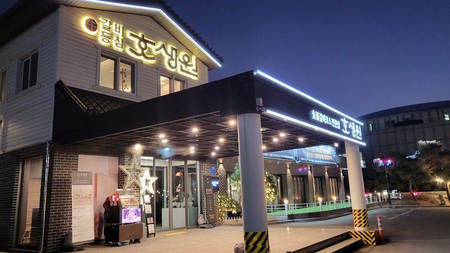
풍경단독 건물 외관
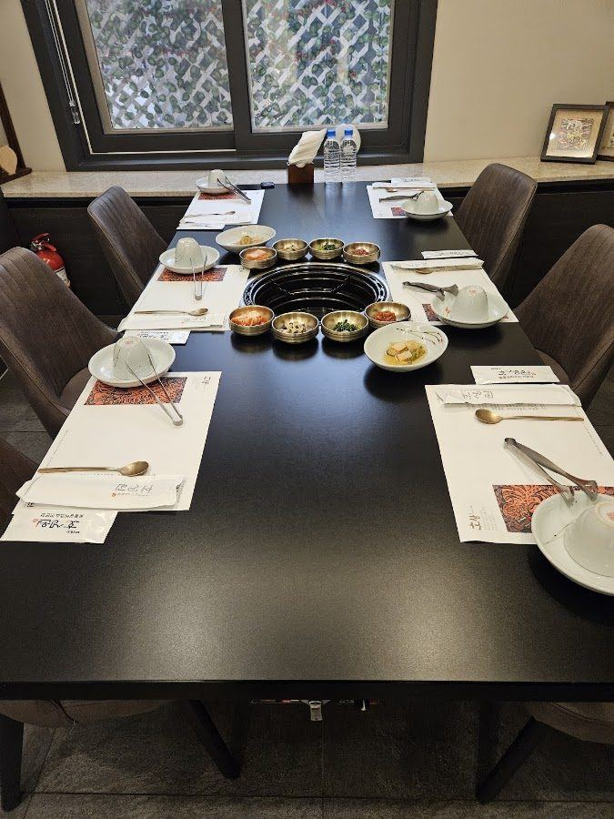
룸화로 있는 긴 테이블
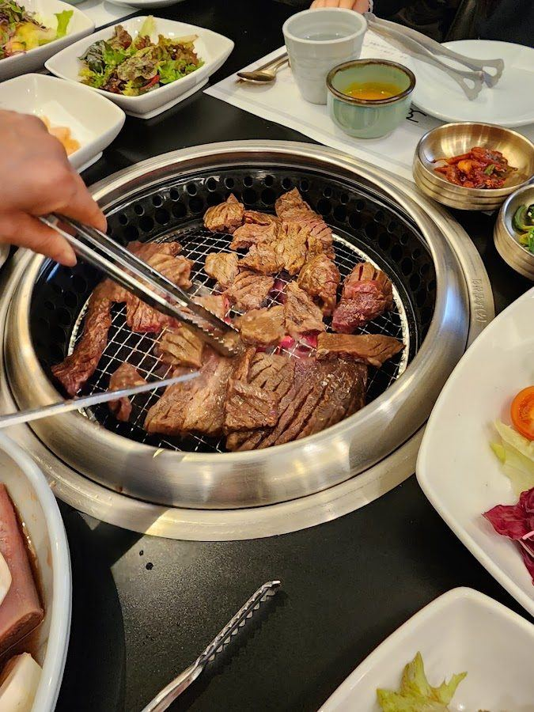
메뉴숯불구이 상차림
내부 사진
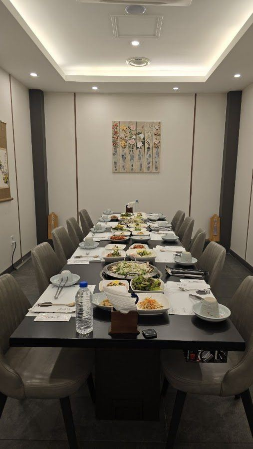
단체 룸 (긴 테이블)
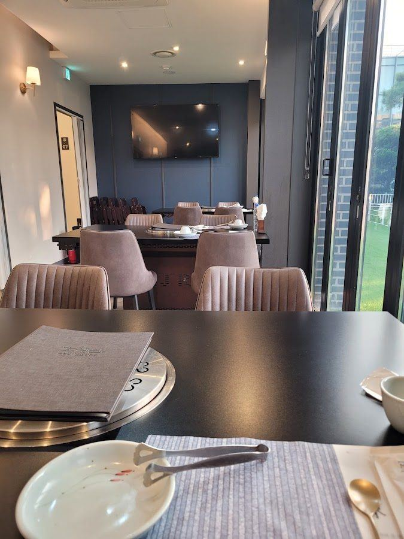
TV 있는 룸
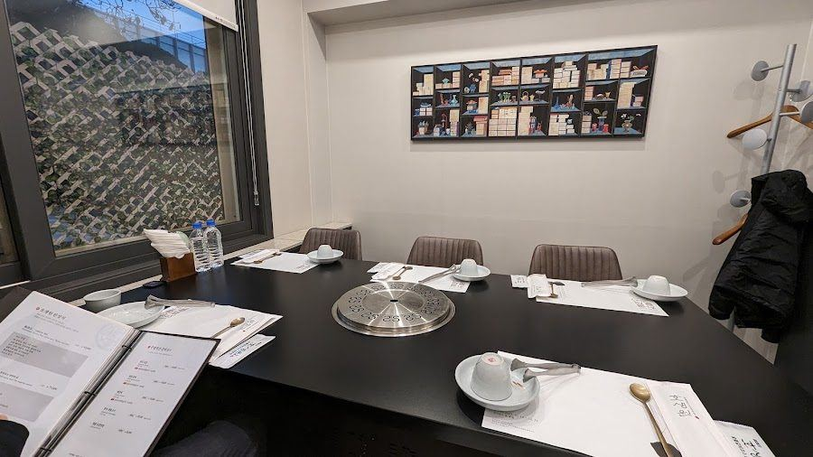
소규모 룸
풍경
단독 건물에 주차장이 넓어 여러 차량이 와도 여유롭습니다.
룸
대형 룸이 있어 친척 모임 규모도 수용됩니다. 기업 접대에도 쓰이는 단정하고 격식 있는 분위기입니다.
메뉴
한정식 코스. 육회와 복어 곁들임 반찬이 이 집의 특색으로 꼽힙니다. 사진처럼 테이블 화로에 고기를 굽는 구성도 있습니다.
이런 분께 어른들 모시고 제대로 차린 자리를 원할 때
수지 신봉동 · 한정식
연지한정식
숲속 정원이 있는 아늑한 한정식집
용인 수지구 신봉1로 291점심 11:30 영업 시작구글 평점 3.9 (643명)
예약 가능11:0013:30각 2시간 이용
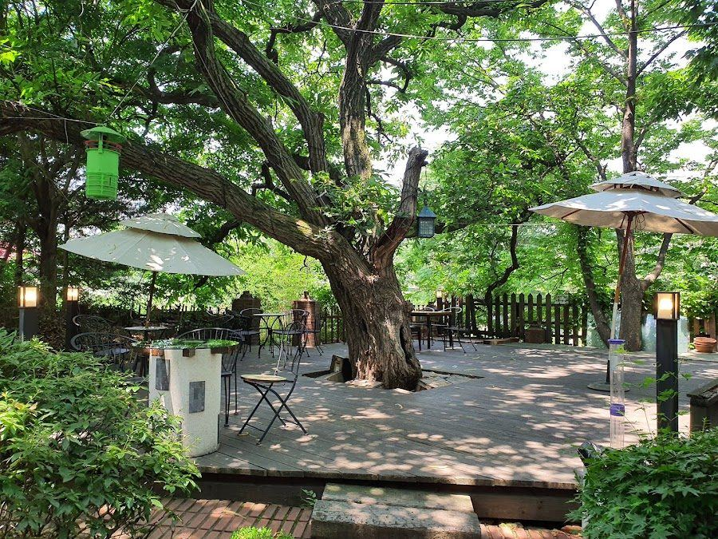
풍경큰 나무 아래 정원
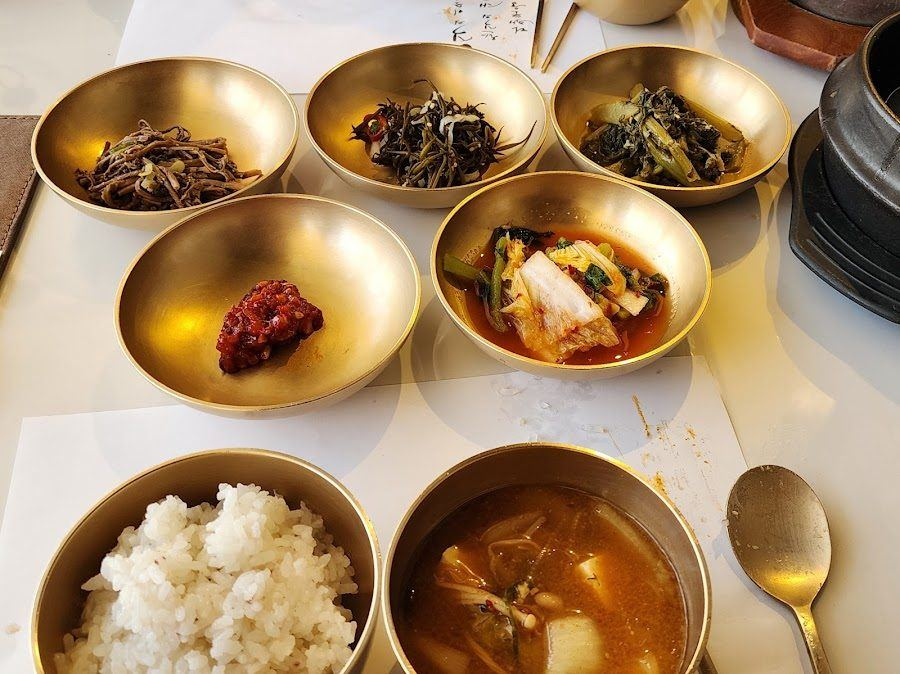
메뉴놋그릇 한상
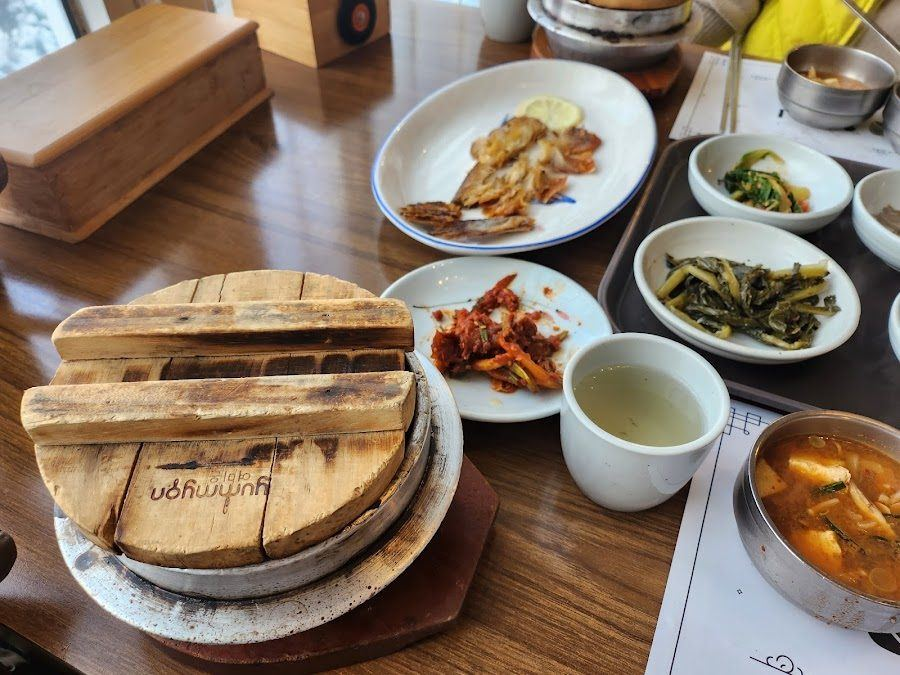
메뉴솥밥 상차림
내부 사진
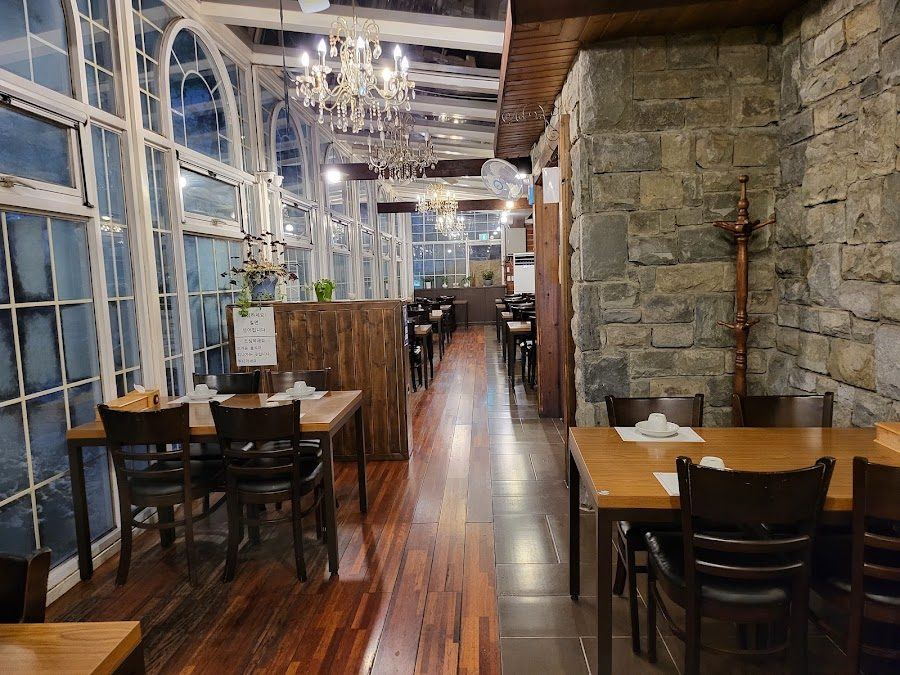
유리창 홀 (샹들리에)
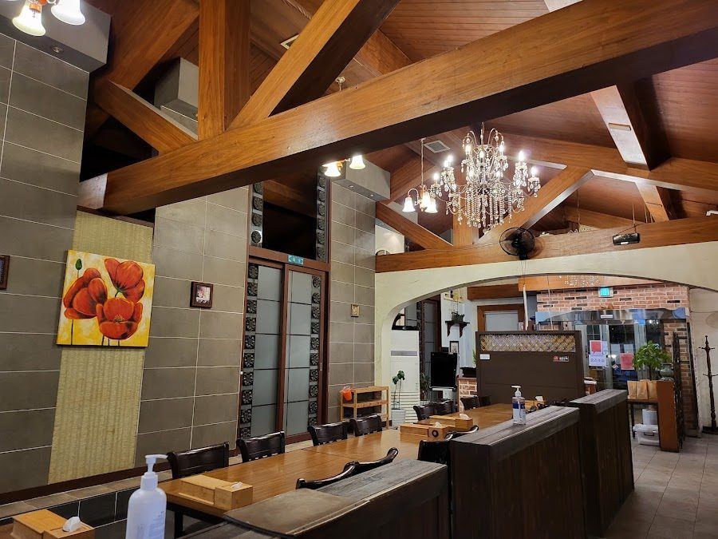
목조 서까래 홀
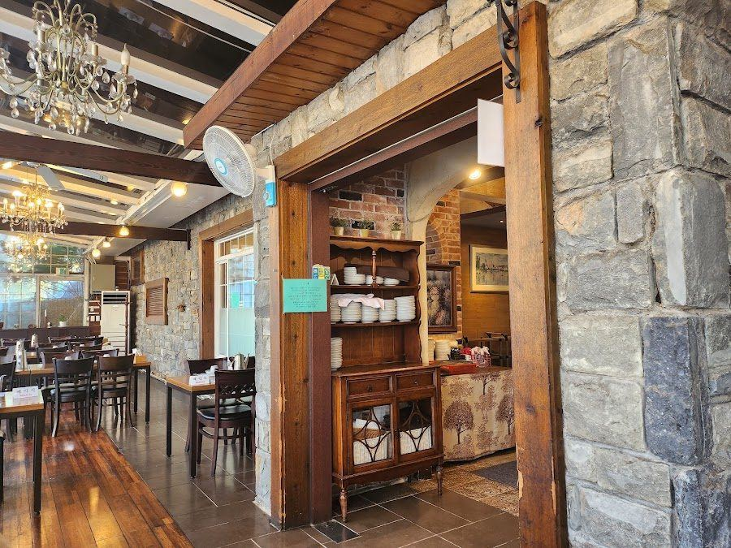
입구 쪽 공간
풍경
신봉동 안쪽 나무숲 사이에 자리 잡았습니다. 큰 나무 아래 정원이 있어 식사 전후로 가족사진 찍기 좋고, 후기에 정원과 주차 이야기가 자주 나옵니다.
룸
단체석이 있어 가족 모임과 상견례 장소로 소개됩니다. 위 내부 사진은 홀이고, 독립 룸 사진은 찾지 못했습니다. 룸이 있는지는 전화로 확인하세요.
메뉴
두레상·수라상·연회상 코스. 미리 차려두지 않고 코스마다 바로 조리해 낸다는 후기가 있습니다.
미리 알아두기 입구가 골목 안쪽이라 지나치기 쉽다는 후기가 있어요. 어르신들께는 주소와 함께 정원 사진을 미리 보내드리면 찾기 쉽습니다.
수지 동천동 · 대형 한식당
오월식당
맛 위주의 편안한 가족 식사
용인 수지구 동천로 409매일 11:00–21:00구글 평점 3.8 (466명)
예약 가능11:00
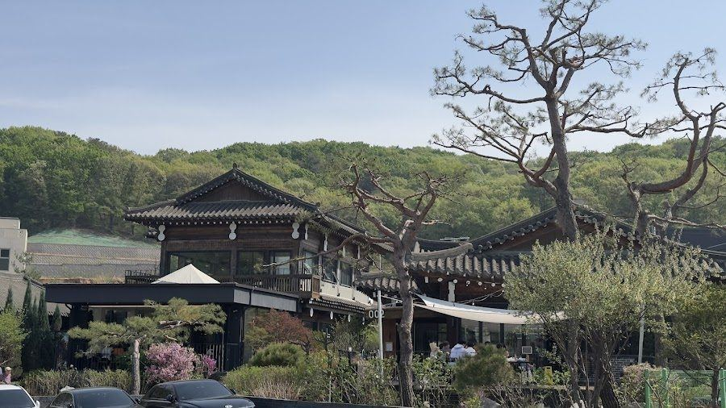
풍경한옥과 소나무 정원
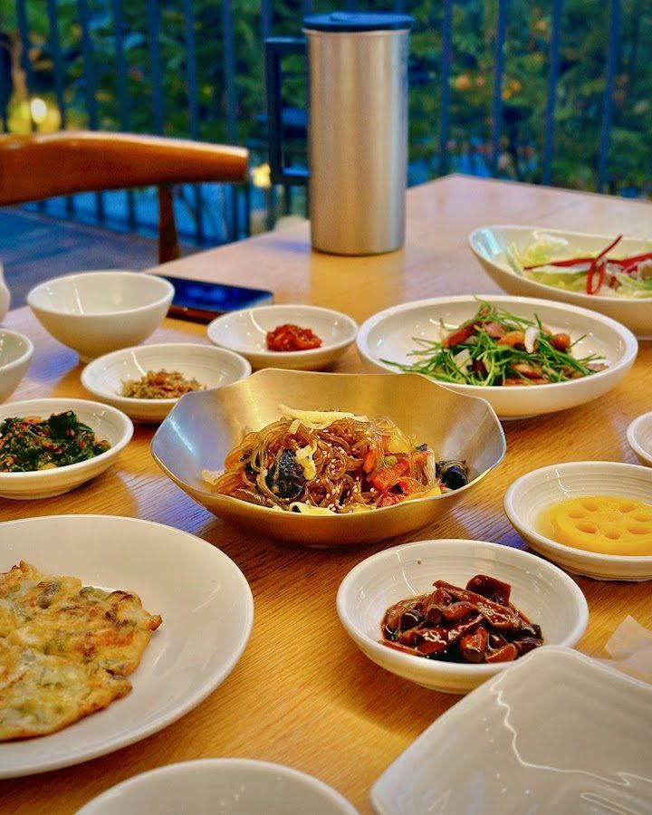
실내창가 원목 테이블
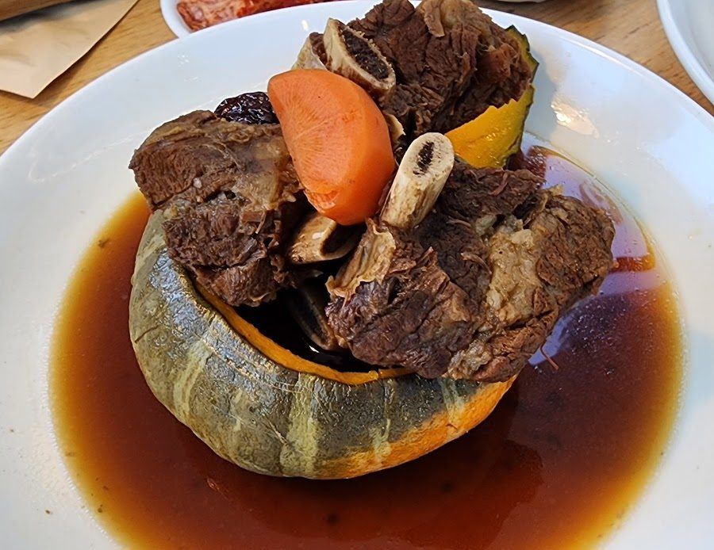
메뉴단호박 갈비찜
내부 사진
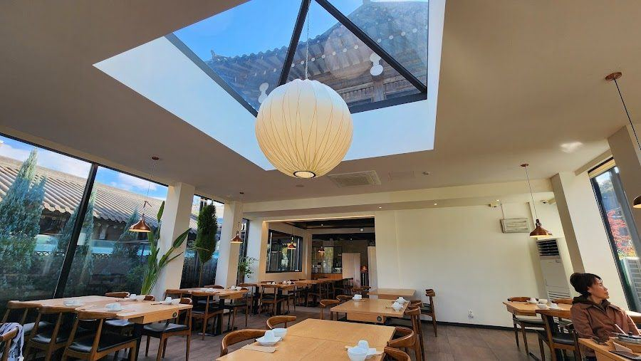
천창 있는 홀
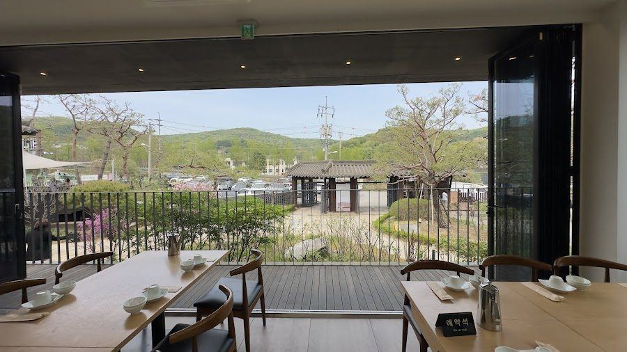
창밖 산 풍경 좌석
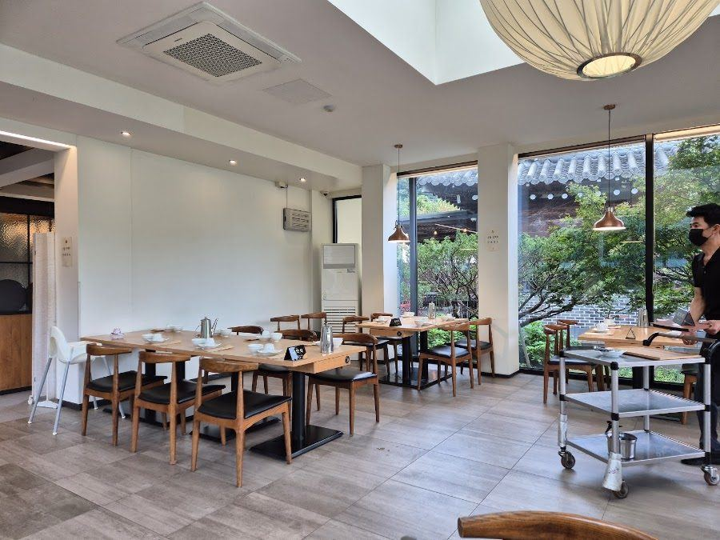
홀 전경
풍경
교외의 한옥 건물로, 소나무 정원과 뒷산이 어우러져 단체 사진 찍기 좋습니다. 공간도 넓습니다.
룸
공개된 룸 사진이 거의 없어 위 사진은 홀 좌석입니다. 예약 전화 때 룸 사진을 카톡으로 받아보세요.
메뉴
대표 메뉴는 단호박 갈비찜. 달큰한 갈비가 단호박에 담겨 나와 어른들 입맛에도 잘 맞습니다.
이런 분께 격식보다 음식 맛과 편안함을 우선할 때
한눈에 비교
| 호생원 | 연지 | 오월식당 |
|---|
| 예약 가능 시간 | 모든 시간 | 11:00, 13:30
(각 2시간) | 11:00 |
|---|
| 분위기 | 가장 격식 | 숲속 정원·아늑함 | 한옥·편안함 |
|---|
| 룸 | 대형 룸 확인 | 단체석 있음, 룸은 확인 필요 | 전화 확인 필요 |
|---|
| 주차 | 넓음 | 있음 | 넓은 편 |
|---|
| 어르신 이동 | 편함 | 확인 필요 | 확인 필요 |
|---|
| 대표 메뉴 | 한정식 코스 | 두레상·수라상·연회상 | 단호박 갈비찜 |
|---|
| 위치 | 기흥 | 수지 신봉동 | 수지 동천동 |
|---|